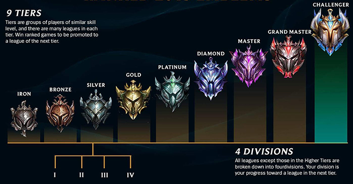
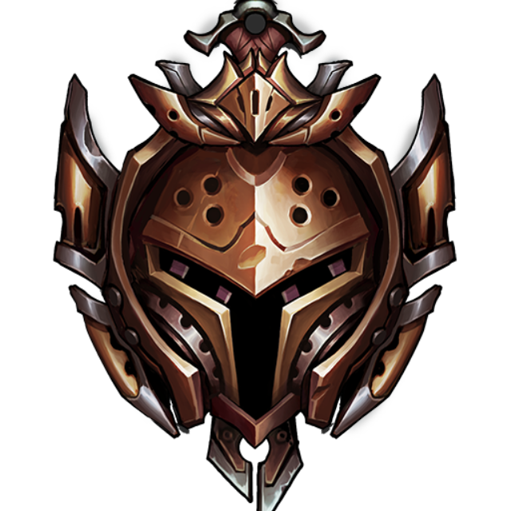

強者への道のり
事の始まりは2021年4月17日開催のclashに参加する事になり、leagueoflegendsを遊び始めて１年経ってようやくランク戦をしました。
振り分け戦を終えた結果は”ブロンズⅡ”
leagueoflegendsのランクは下記の通り
下から２番目のランク帯です。

この結果を受け強くなろうと思いました。
ただ強くなるだけではモチベーションに欠けるのでブログとして成長記録をつけていこうと思います
ゲームの基本情報に関しては公式サイトを見てください
leagueoflegends基本情報
現在のランク
ランクが更新された際に変更します

役割とメインチャンプ
ランク戦では試合開始前に役割を決めてからマッチングを行います
- 役割
- マークスマン
- メインチャンプ
- エズリアル
- プレイスタイル
- 仲間を信用しない

エズリアルをメインにする理由
高い機動力
スキル”アーケインシフト”を活かし味方の強引な仕掛けに対応したり、戦線離脱を容易に行える自己防衛が行えるため、コミュニケーションがまともに取れない味方との連携も無理矢理可能にしてくれる。
エズリアルについて
活動履歴の残し方
ランク戦をした日の試合で一番良かった試合か悪かった試合をピックアップして下記内容にまとめる。
まとめる際は良かった点又は反省点を各項目で書く
- 試合時間
- CS数
- 視界スコア
- キル関与率
- トータルダメージ
- K/D
良いクリップが作成できたらyotubeに上げて埋め込む
活動履歴
まとめる際は良かった点又は反省点を各項目で書く
- 投稿でき次第更新
- 投稿でき次第更新
- 投稿でき次第更新